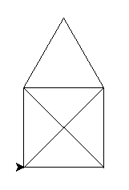

Bevezető feladatok
- Írj programot, ami kiírja a képernyőre, hogy ”Hello world!”!
- Írj programot, ami beolvassa a felhasználó nevét, majd köszön neki!
- Írj programot, ami beolvas egy számot, majd kiírja a kétszeresét!
-
Írj programot, ami beolvas két számot, majd kiírja:
a. az összegüket;
b. különbségüket;
c. szorzatukat;
d. hányadosukat, ha lehet!
- Írj programot, mely beolvas két pozitív egész számot, és kiírja a számtani és mértani közepüket! A gyökvonáshoz használd a beépített Sqrt() függvényt!
- Írj programot, mely beolvassa egy derékszögű háromszög két befogóját, és megadja az átfogójának a hosszát! Az átfogót 2 tizedesjeggyel add meg!
- Írj programot, mely beolvassa a téglatest három élének hosszát, és kiírja a felszínének és térfogatának mérőszámát!
- Írj programot, mely beolvassa egy kör átmérőjét, és kiírja a kör kerületét és területét! A pi értékének meghatározásához használd a Math.PI értéket!
- Írj programot, ami beolvassa a körív sugarát és középponti szögét, és kiírja a körív területét és a határoló ív hosszát!
-
Rajzoljuk meg a lenti ábrát! A szakaszok egyforma hosszúak,
100 képpontosak.

- Rajzoljuk meg a lenti ábrát! A szakaszok egyforma hosszúak, 100 képpontosak. A középső háromszög szabályos.
- Rajzoljuk meg a mellékelt házikót egyetlen vonallal! Nem emelhetjük fel az ecsetet, és nem mehetünk kétszer végig egy vonalon. A tető szabályos háromszög. A szakaszok egyforma hosszúak, 100 képpontosak. 